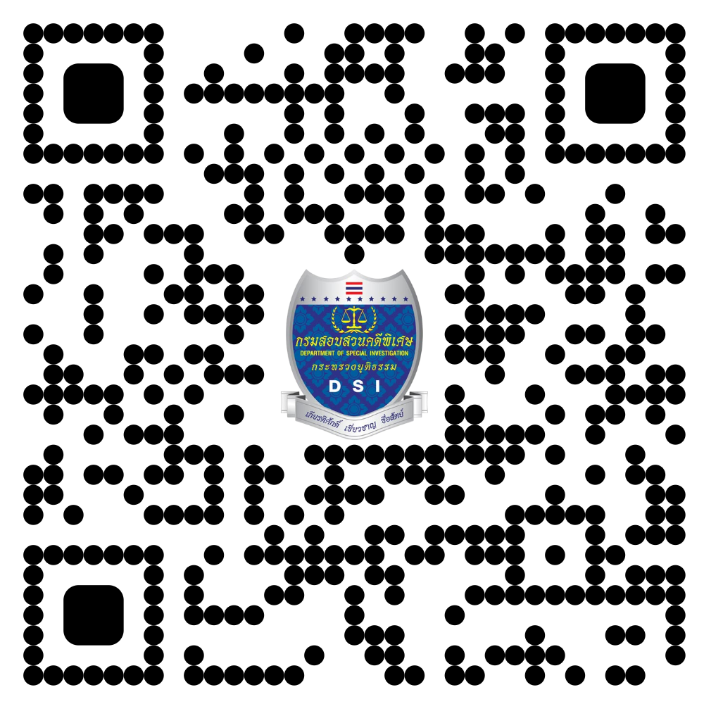

ช่องทางการติดต่อเรา
ศูนย์ปฏิบัติการคดีพิเศษจังหวัดชายแดนภาคใต้ (DSI)
อาคารบูรณาการกระทรวงยุติธรรมจังหวัดปัตตานี
เลขที่ 18 ซอย 5
ถนนเจริญประดิษฐ์ ตําบลสะบารัง อําเภอเมืองปัตตานี จังหวัดปัตตานี
ช่องทางการติดต่อ ๐ ๒๘๓๑ ๙๘๘๘ ต่อ ๖๑๐๐๑
e-mail sbocdsi@gmail.com
ช่องทางการติดตามเรา

เว็บไซต์ DSI
Facebook
Instagram
TikTok
YouTube
Twitter